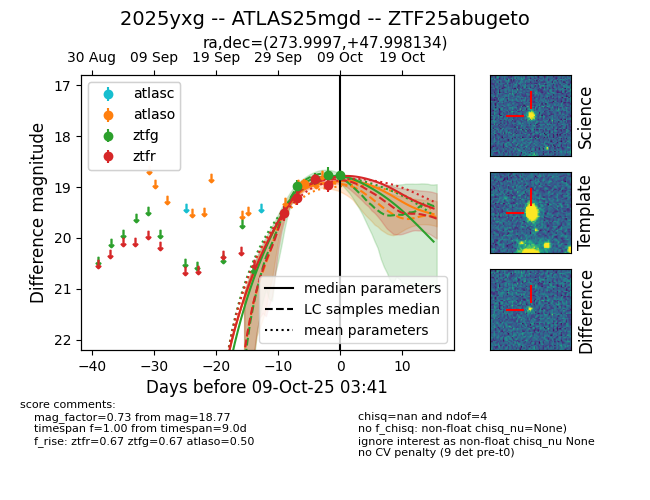
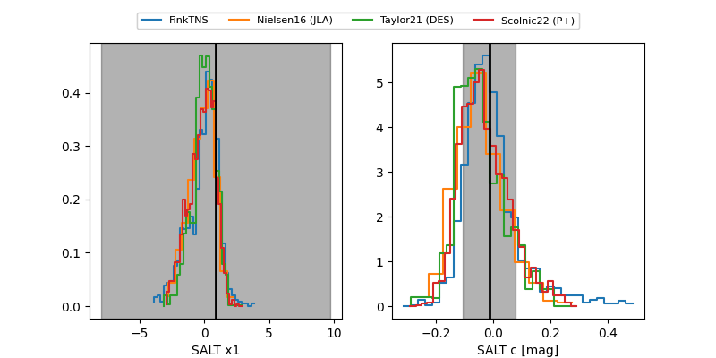

FINK: ZTF25abugeto
Lasair: ZTF25abugeto
ALeRCE: ZTF25abugeto
TNS: 2025yxg
YSE: 2025yxg
ZTF25abugeto (ztf,fink)
2025yxg (tns,yse)
ATLAS25mgd (atlas)
equatorial (ra, dec) = (273.9997,+47.99813)
galactic (l, b) = (75.8309,+25.50409)


last atlaso=18.93, ztfg=18.77, ztfr=18.97
1 atlaso, 4 ztfg, 4 ztfr detections